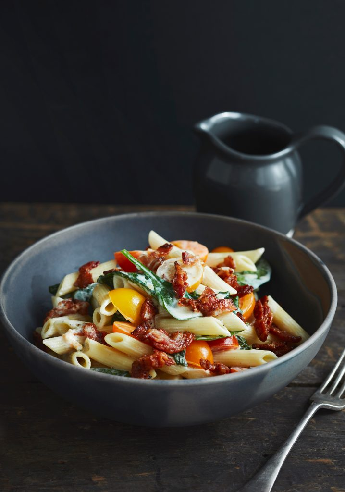

Penne Rigate Crémeux Au Bacon, Aux Tomates & Aux Épinards
 4 servings
4 servings 25 min
25 min-
 Marilou - Trois Fois Par Jour
Marilou - Trois Fois Par Jour
 Meat
Meat Salty
Salty
Savoureuse recette de pâtes qui est rapide et facile à préparer pour les soirs de semaine.

1 boîte (375 g)penne rigate1 tassebacon, tranché finement- POUR LA SAUCE
1 ½ tassecrème à cuisson 15%½ tassebouillon de poulet1 paquet (125 g)fromage de chèvre frais1 ½ tassetomates cerises multicolores, coupées en 22 tassebébés épinards- Sel et poivre, au goût
Porter un grand chaudron d’eau salée à ébullition, puis cuire les pâtes selon l’indication sur l’emballage. Égoutter et réserver.
Dans une poêle antiadhésive, à feu moyen-vif, cuire le bacon jusqu’à ce qu’il soit croustillant, puis réserver.
Dans un chaudron, à feu moyen, verser la crème, le bouillon de poulet et le fromage de chèvre, puis laisser mijoter doucement pendant
10 minutes.
Ajouter les tomates et les épinards, puis poursuivre la cuisson pendant
5 minutes. Assaisonner.
Incorporer les pâtes à la sauce et bien les enrober. Garnir de bacon pour servir.